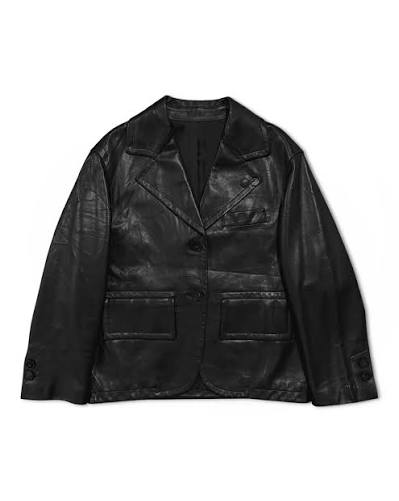

Maison Margiela 2001 Artisanal Leather Jacket

Preço original: R$ 25.000,00 | Preço Archive Vault: R$ 18.500,00
Nível de raridade da peça:
Bem-vindo ao Archive Vault! Explore nossa curadoria exclusiva de roupas de luxo usadas.
Descubra peças únicas e de alta qualidade selecionadas por nossos especialistas.
Faça login para acessar sua conta
Preço original: R$ 25.000,00 | Preço Archive Vault: R$ 18.500,00
Nível de raridade da peça:

Preço original: R$ 20.000,00 | Preço Archive Vault: R$ 14.500,00
Nível de raridade da peça:
85%
Ouça a atmosfera sonora da coleção: